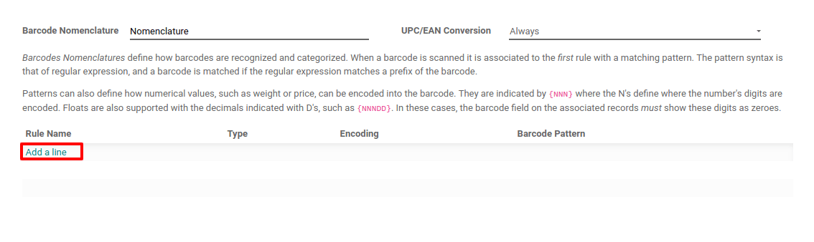
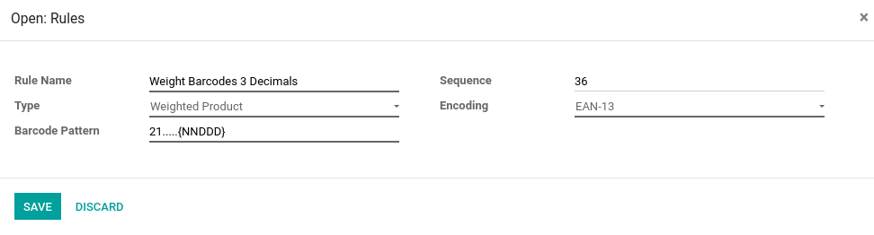

Información general¶
Existen diferentes situaciones en las que las nomenclaturas de códigos de barras pueden ser útiles. Un caso de uso conocido es el de un punto de venta que vende productos a granel, en el que los clientes escalarán sus productos por sí mismos y obtendrán el código de barras impreso para pegarlo en el producto. Este código de barras contendrá el peso del producto y ayudará a calcular el precio debidamente.
Crear una nomenclatura de código de barras¶
Odoo es compatible con nomenclaturas del código de barras. Estas nomenclaturas determinan el mapeo de la información encriptada. Puede configurar su nomenclatura de código de barras en el modo de desarrollador. Para hacerlo, vaya a .
Puede crear una nomenclatura de código de barras desde ese menú y luego agregar una línea para crear su primera regla.
El primer paso es especificar el nombre de la regla, por ejemplo, Código de barras de Peso con 3 decimales. Luego debe especificar el tipo de nomenclatura de código de barras, en nuestro caso será peso del producto.
El patrón de código de barras es una expresión regular que define la estructura del código de barras. En este ejemplo, 21 define los productos en los que se aplicará la regla, esos son los números con los que debe comenzar el código de barras del producto. Los 5 “puntos” son los siguientes números del código de barras del producto y están ahí simplemente para identificar el producto en cuestión. La “N” define un número y la “D” define los decimales.
La codificación permite especificar la codificación del código de barras en la que se debe aplicar la regla.
Nota
Puede definir diferentes reglas y ordenar su prioridad gracias a la secuencia. Se aplicará la primera regla que coincida con el código de barras escaneado.
Configure su producto¶
El código de barras del producto debe comenzar por “21”;
Los 5 “puntos” son los otros números del código de barras de su producto, lo que permite identificar el producto;
El código de barras debe contener 0 donde definió D o N. En este caso, necesitamos establecer 5 ceros ya que configuramos “21…..{NNDDD}”;
En EAN-13, el último número es un número verificador, use un generador EAN13 para saber qué dígito debería ser en su caso.
Si pesa 1,5 kg de pasta, la balanza le imprimirá el siguiente código de barras 2112345015002. Si escanea este código de barras en su punto de venta o cuando reciba productos en su aplicación de código de barras, Odoo creará automáticamente una nueva línea para el producto Pasta para una cantidad de 1.5 Kg. Para el punto de venta, también se calculará un precio que depende de la cantidad.

Tipos de reglas¶
Producto con precio: le permite identificar el producto y especificar el precio utilizado en POS.
Producto con descuento: le permite crear un código de barras por descuento aplicado. Luego puede escanear su producto en el punto de venta y luego escanear el código de barras de descuento, el descuento se aplicará al precio normal del producto.
Producto con peso: le permite identificar el producto y especificar su peso, utilizado tanto en el punto de venta (en el que el precio se calcula en función del peso) como en el inventario.
Cliente: le permite identificar al cliente, por ejemplo, utilizado con el programa de lealtad.
Cajero: le permite identificar al cajero al ingresar al punto de venta.
Ubicación: le permite identificar la ubicación en una transferencia cuando se activa la ubicación múltiple.
Paquete: le permite identificar paquetes en una transferencia cuando los paquetes están activados.
Tarjeta de crédito: no necesita modificación manual, existe para los datos del módulo Mercury.
Producto unitario: le permite identificar un producto tanto para el PdV como para transferencias.
Nota
Cuando el patrón de código de barras contiene. *, significa que puede contener cualquier número de caracteres y estos caracteres pueden ser cualquier número.